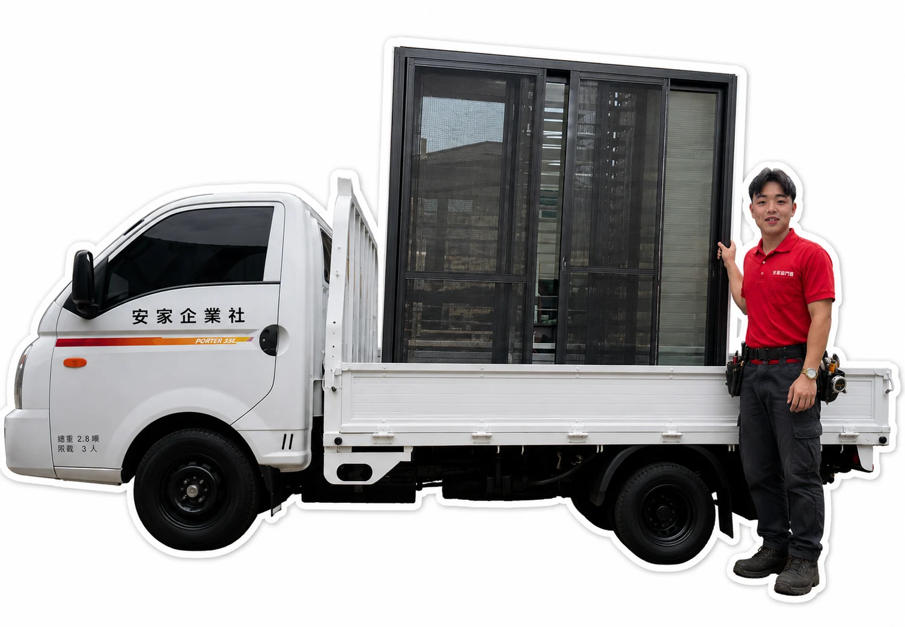

風雨與遮雨需求
小港區車庫採光罩、門窗密合、遮雨與較大尺度工程常受到方向與既有結構影響，先確認雨水來源、遮擋範圍與固定位置，再決定施工方式。
採光罩、氣密窗、店面落地門窗與住宅門窗更新，不急著先選產品；先確認漏水、遮雨、採光、噪音與使用動線，再決定適合的施工方式。
小港區到府丈量・專業規劃・安心施工
安家鋁門窗工程提供高雄小港區採光罩、氣密窗、店面落地門窗、三合一通風門、藝術玄關門、格柵圍欄、辦公室隔間等施工服務。本區以透天、華廈、廠辦與商業空間並存，常見需求集中在車庫採光罩、門窗密合、遮雨與較大尺度工程。丈量時會把現場使用方式、尺寸與既有結構一起納入。
小港區規劃時會特別注意遮雨、排水、採光、門窗密合、使用動線與既有結構，並依迎風面、粉塵、排水及固定方式安排適合的處理方式。
小港住宅與產業空間並存，透天、華廈、店面及廠辦常見。門窗與採光罩規劃會特別留意迎風面、雨水流向、粉塵與戶外構件固定，車庫及前後陽台也常有遮雨與採光需求。

可左右滑動，系統也會每 3 秒自動輪播
不同狀況需要不同處理方式
小港區車庫採光罩、門窗密合、遮雨與較大尺度工程常受到方向與既有結構影響，先確認雨水來源、遮擋範圍與固定位置，再決定施工方式。
先檢查骨架、板材、固定件與收邊，再判斷局部更新或整體汰換，避免只處理表面。
一起查看窗框、玻璃、填縫與外牆接合；若問題來自牆體或排水，會先釐清來源。
住宅與產業混合常有不同進出、採光與隱私需求，門扇、格柵或隔間配置會依實際動線調整。
丈量時會先確認的 5 件事